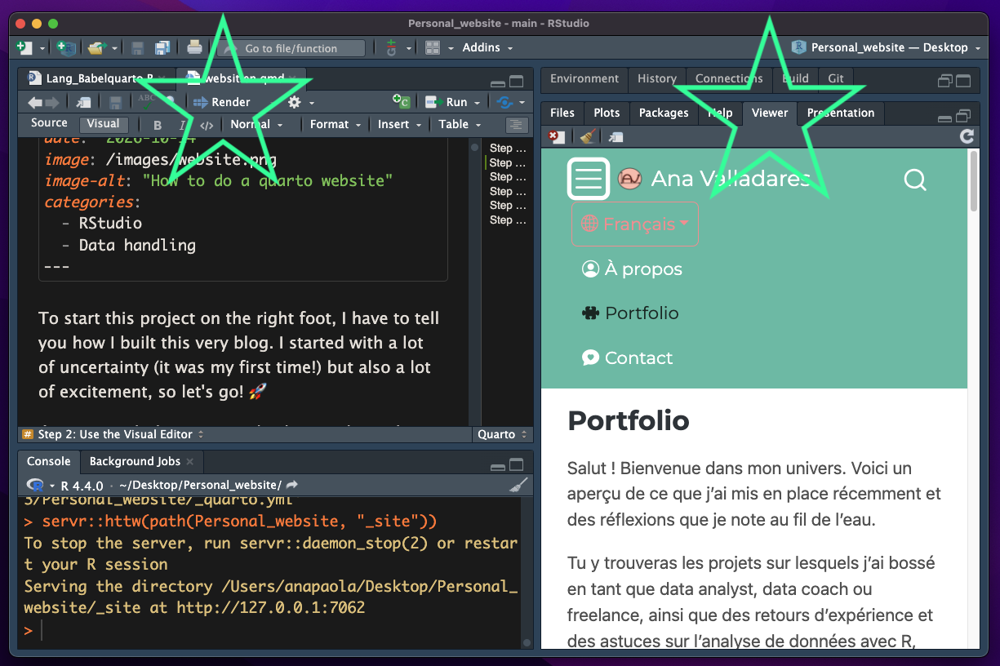

Do not get lost with Quarto: A beginner-guide to start your website with R
RStudio
Quarto
Blog post
If you are hesitating to launch your own website to post your thoughts as a blog, to show off your portfolio of data analysis projects or just want one to write on, let me explain how I built this very blog.
I started with a lot of uncertainty too (it was my first time!) but with practice and patience, everything is possible!
I’m not a web designer. My background is data analysis, so programming in RStudio was my ally here.
To understand how a website works (and design your own), you’ll need to learn a tiny bit about HTML, CSS and JavaScript, but don’t worry, Quarto does most of the heavy lifting.
Step 1: Choose Your Adventure
Quarto works with several editors, so you can choose Jupyter if you are more comfortable with Python, VS Code, or, if you are an R lover like me, you will start by:
Step 2: Use the Visual Editor
If you’re using RStudio, the Visual Editor is your best friend.
It’s what you see is what you get, so it works like Word: you can make text bold, add headings or insert images with buttons.
Then you hit Render to preview the result. Misspelling a function, variable, dataset, or package name is one of the most common (and most overlooked) sources of errors.

Step 3: Meet _quarto.yml, Your Little Chef
The first thing to learn is the _quarto.yml file. Think of it as a little chef who puts everything in order: it decides what you show on your site and how you show it. It brings all things together, so every page you create is connected through this configuration file.
You can choose from many themes on the official Quarto website. I used the Minty theme for this blog.
Try it yourself: pick a theme
Here is the code you would put in your _quarto.yml:
Change the theme in the dropdown and the code updates automatically. Copy it!
Step 4: Understand Your Files
Each page of your site is a .qmd file. A basic project looks like this:
├── _quarto.yml # Website configuration file
├── about.qmd # About page
├── index.qmd # Landing page
├── my-website.Rproj # RStudio project config file
└── styles.css # CSS style sheet
Tip👆 Click to learn what each file does
-
_quarto.yml: the “chef”; controls the whole site’s configuration -
index.qmd: your landing page (the first thing visitors see) -
about.qmd: a page to tell people who you are -
.Rproj: tells RStudio this folder is a project -
styles.css: your custom styling, once you want to go beyond themes
Step 5: Going Multilingual

Our blog is written in Spanish, English and French, because we are fluent in all three. To do this I used the babelquarto package.
ImportantImportant!
With babelquarto you should not click Render Website. Instead, run the code directly in the console:
babelquarto::render_website()This gives you a preview with all languages already set up.
Behind the scenes, this converts all your .qmd files into HTML files, the key building blocks of any website.
Step 6: Where Does the Website Live?
Your website is rendered into the _site folder. You can even double-click any .html file in there and open it in your browser to see how it looks. This folder updates every time you run the code.
Your Turn!! Mini Quiz: What’s Your Quarto Setup?
Answer three quick questions and I’ll tell you where to start.
Which editor did you pick, and which theme are you going with?
Get in touch to plan a session!
References:
- Jadey Ryan: Beginner Quarto + Netlify
- Joel Nitta: babelquarto
- Quarto Websites documentation
- This post was written with the help of Claude (Anthropic’s AI), based on my own original ideas and experience.